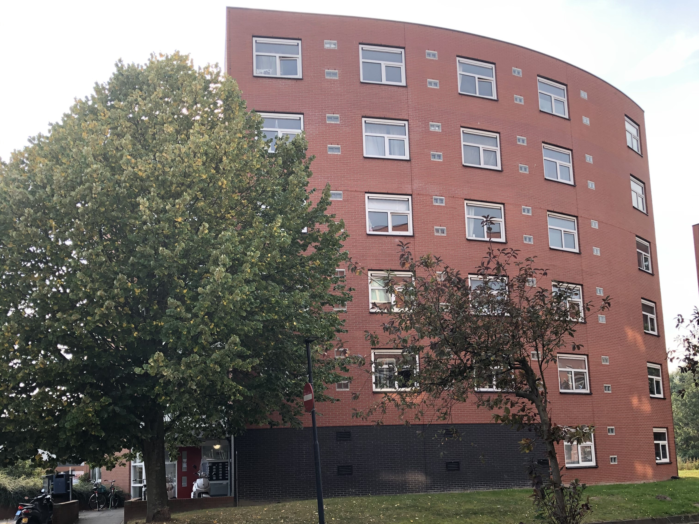
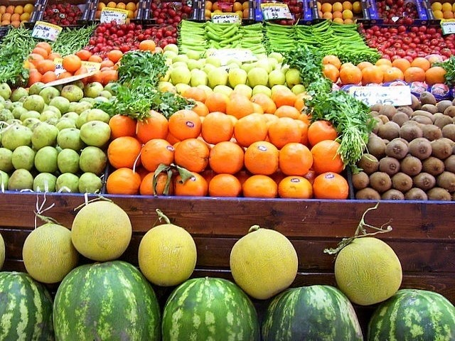

Student friendly
You might be wondering what do you need for living in Hoofddorp while you are a student. Hoofddorp is a city suitable for students! If you already read about the things that make it awesome, you understand that for living here you only need to pay for a few basic things.
Look at things affordable for your budget
This page will help you grasp the most important information that you need to know!
Accomodation
Get your hands on the best deals
If you decided to enroll in a study programme in the Netherlands, finding accomodation is your top priority!
Depending on your lifestyle, you have more options to rent a room, studio or appartment. Sharing a rented place is the most affordable option. The prices vary from 400€ to 1200€on a monthly basis. Up to 700€ you can find a shared room or studio in good condition but not necessary renovated. And from 800€ to 1200€ you can find a shared studio or apartment in excellent condition and very recently renovated. You can find the best deals online.
Food
The most attractive markets and restaurants
To buy food in Hoofddorp, you have various supermarkets and resturants to choose from. Many of the supermarkets have Dutch and Indian food.
A weekly market also takes place every Friday on the Burgemeester van Stamplein. There you can buy fresh products such as fruits, vegetables and meat.
Restaurants offer a wider variety of cuisines. There are many restaurants with international cuisine and fast food restaurants. You can choose from various cuisines such as Dutch, Indian, Asian, Italian, American, Greek, Spanish and Russian.
A lunch at a fast food restaurant can cost from 10€ to 20€.
At a traditional restaurant, a lunch costs from 30€ to 40€.
Medical insurance
Save money with good offers!
Having a medical insurance is not mandatory for the international students in the Netherlands. However, if you become employed, you will need an insurance.
Depending on the price you pay for the insurance, it can cover most of the medical expenses or all of the expenses.
At Zilverenkruis you can take out a medical insurance at prices ranging from 130€ to 155€ . Students can get a discount of up to 25% of an additional insurance. This is required for dentistry, glasses and lens. Its price can range from 2€ to 75€.
While being a student you might never need the medical ensurance. But it can be useful for exemption from the courses, vaccination or if you have a dental problem. Otherwise, without medical insurance, the costs for medical services are very high.